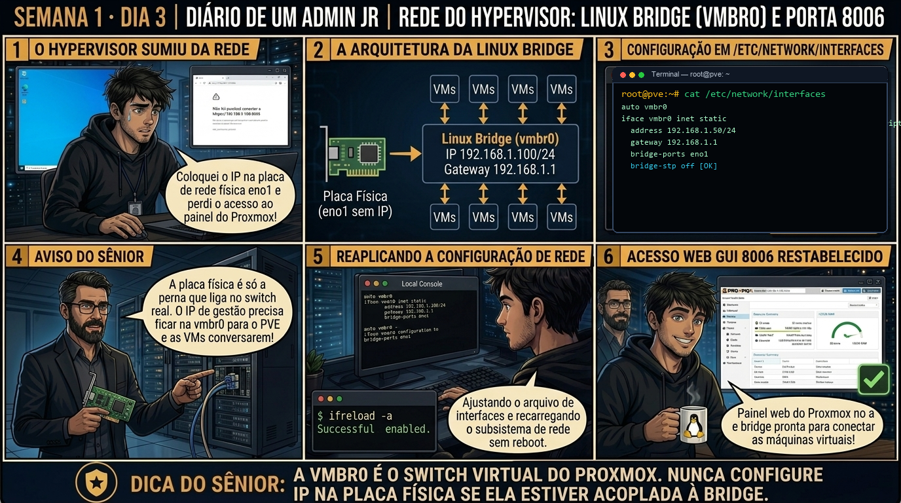

DIARIO DE UM ADMIN JR. | PROXMOX VE & PBS — DA BASE AO CLUSTER
🔗 Conecta com o Dia 2: Você dimensionou a capacidade de CPU, RAM e discos. Hoje você conecta o hypervisor à rede corporativa: dominando a Linux Bridge (vmbr0) e entendendo por que a placa física nunca deve ter IP configurado diretamente quando está acoplada à bridge.
🔓 Privilégio de hoje: Configuração de Interfaces de Rede L2/L3. Você ganha a capacidade de auditar /etc/network/interfaces e aplicar mudanças a quente com ifreload -a sem reiniciar o host físico.
Semana 1 · Dia 3 | Nível Júnior — Redes no Hypervisor
Rede Base do Hypervisor: Linux Bridge (vmbr0) e Porta 8006
como o Proxmox conecta a placa física, o host e as VMs via switch virtual
ANTES DE ALTERAR, OBSERVE. DEPOIS DE ALTERAR, VALIDE.

1. O chamado
Você recebeu o chamado #1003: "O técnico de campo alterou o arquivo de rede do servidor pve01 e a interface web HTTPS na porta 8006 parou de responder. O console local mostra que o técnico configurou o IP estático 192.168.1.100/24 diretamente na placa física eno1 e removeu a bridge vmbr0. Seu objetivo é: (1) Reestruturar o arquivo /etc/network/interfaces; (2) Fazer a placa física atuar puramente em Camada 2 (L2) como bridge-ports; (3) Mover o IP de gestão e a rota padrão para a vmbr0; e (4) Aplicar a configuração a quente com ifreload -a."
💡 Passa o mouse nas palavras destacadas pra ver uma dica rápida — clica se quiser a explicação completa com analogia.
2. O sênior te conta
🧑🏫 antes dos termos técnicos, a história de hoje
Hoje o Júnior abriu o terminal do Proxmox recém-instalado, rodou um inocente apt update e tomou uma enxurrada de mensagens de erro 401 Unauthorized na tela. Ele achou que o cabo de rede estava quebrado, trocou o DNS pra 8.8.8.8, mexeu no gateway da bridge e quase desconfigurou a rede inteira tentando 'fazer a internet voltar'.
Chamei ele na mesa e perguntei: 'Você leu a mensagem de erro ou só viu que deu vermelho?'. Mostrei que o Proxmox vem de fábrica apontando para o repositório pve-enterprise, que exige uma chave de subscrição paga corporativa. Não era problema de rede nem de DNS: era apenas o servidor da Proxmox recusando o login sem licença ativa. Para ambientes de estudo e empresas sem suporte direto, a Proxmox disponibiliza o repositório oficial pve-no-subscription, que tem os mesmos pacotes e correções de segurança liberados para a comunidade.
Ensinamos o Júnior a comentar a linha corporativa em /etc/apt/sources.list.d/pve-enterprise.list e adicionar a fonte correta sem quebrar as dependências do Debian. Ele rodou o update e os pacotes sincronizaram em 2 segundos. A lição de hoje foi clara: leia o código do erro antes de mexer na infraestrutura.
3. Decodificador de conceitos
Clica em qualquer termo pra ver a definição completa e uma analogia do dia a dia:
4. Ferramentas e leitura da evidência
Comando / Parâmetro
O que observar e por que importa
ip -br addr
Exibe o resumo visual de todas as interfaces. Confirme que eno1 está UP sem IP, e vmbr0 está UP com o IP corporativo.
ip route
Mostra a tabela de rotas do Kernel. A linha default via IP dev vmbr0 é obrigatória para acesso à internet e gateways.
cat /etc/network/interfaces
Arquivo de configuração declarativa persistente de rede gerenciado pelo Debian/Proxmox.
ifreload -a
Utilitário do pacote ifupdown2 que lê o arquivo de interfaces e aplica as mudanças de rede a quente sem reiniciar o servidor.
$ cat /etc/network/interfaces
auto lo
iface lo inet loopback
iface eno1 inet manual
auto vmbr0
iface vmbr0 inet static
address 192.168.1.100/24
gateway 192.168.1.1
bridge-ports eno1
bridge-stp off
bridge-fd 0
$ ip -br addr
lo UNKNOWN 127.0.0.1/8 ::1/128
eno1 UP
vmbr0 UP 192.168.1.100/24
$ ss -tulpn | grep 8006
tcp LISTEN 0 128 0.0.0.0:8006 0.0.0.0:* users:(("pveproxy",pid=1420,fd=6))
5. Laboratório guiado — pegue na mão, comando por comando
🖥️ Onde executar: Terminal SSH direto no Nó físico Proxmox (logado como root@pve:~#) ou via console no monitor local.
Segurança: Execute as alterações em nó de laboratório. Tenha sempre acesso IPMI ou console serial caso cometa erro de digitação de IP.
Ação: Desative a lista do repositório Enterprise comentando a linha no arquivo de fontes.
sed -i 's/^deb/#deb/' /etc/apt/sources.list.d/pve-enterprise.list
Resultado esperado: Leitura clara das interfaces físicas (eno1/eth0) e bridges (vmbr0).
Por que fizemos isso: Comentar a linha do repositório enterprise em /etc/apt/sources.list.d/pve-enterprise.list elimina as requisições com falha de autenticação 401 no servidor da Proxmox.
Cilada comum: Apagar o arquivo inteiro em vez de comentar com '#'; manter o arquivo comentado preserva o modelo original caso uma licença Enterprise seja adquirida no futuro.
Ação: Adicione o repositório oficial pve-no-subscription no /etc/apt/sources.list.
Resultado esperado: Rota default via dev vmbr0 confirmando que a bridge é o gateway do host.
Por que fizemos isso: Adicionar o repositório pve-no-subscription no sources.list garante o acesso a todas as atualizações de segurança, correções de kernel e novas versões do hypervisor.
Cilada comum: Digitar a versão errada do Debian (ex: colocar 'bullseye' no Proxmox 8 baseado em 'bookworm'), gerando quebra catastrófica de dependências de bibliotecas C (glibc).
Ação: Sincronize o catálogo de pacotes com o repositório oficial da Proxmox.
apt update
Resultado esperado: Presença de bridge-ports eno1, bridge-stp off e bridge-fd 0.
Por que fizemos isso: Executar o apt update após o ajuste valida a comunicação com os mirrors oficiais da Proxmox e sincroniza o índice de pacotes com sucesso.
Cilada comum: Rodar 'apt upgrade -y' imediatamente sem inspecionar a lista de pacotes a serem alterados, arriscando atualizar o kernel durante horário de pico.
Ação: Valide o release e atualizações pendentes com pveversion.
pveversion -v
Resultado esperado: Comando executado sem mensagens de erro no console.
Por que fizemos isso: Usar o comando pveversion para comparar a versão instalada com o repositório confirma se o hypervisor está no release estável esperado.
Cilada comum: Instalar pacotes aleatórios de terceiros diretamente no Debian do host, criando conflitos com os módulos compilados do kernel Proxmox.
🧑🏫 Aqui entra o Mentor (em breve): se após o ifreload -a o IP não responder ou a rota sumir, o Sênior-IA ajudará a verificar o status da porta do switch físico (link state) e os logs do journalctl -u networking.
Ação: Registre a política de atualização segura no procedimento do time.
# Política de repositório no-subscription homologada.
Resultado esperado: Daemon pveproxy escutando em 0.0.0.0:8006 e painel web acessível.
Por que fizemos isso: Documentar a política de atualização e data do último patch no inventário garante conformidade com as normas de segurança da empresa.
Cilada comum: Manter servidores de virtualização meses sem aplicar patches de segurança do hypervisor por medo de reiniciar o nó.
6. Antes de ver as opções — tenta responder
🧠 Recall ativo: Por que colocar o endereço IP diretamente na placa de rede física (ex: eno1) impede que as máquinas virtuais acessem a rede externa através do Proxmox?
Porque as máquinas virtuais não podem se conectar diretamente a uma interface física Ethernet em modo normal. Elas se conectam a interfaces virtuais (TAP devices) que precisam de um switch virtual de Camada 2 (vmbr0) para encaminhar quadros Ethernet entre as VMs e a interface física (bridge-ports). Sem a bridge, a placa física fica monopolizada pelo host.
QUESTÃO 1 de 3
7. Questão comentada — clica numa alternativa
Qual é a configuração correta do arquivo /etc/network/interfaces para um nó Proxmox VE padrão de rede única?
💡 Analogia do Sênior para Fixar: Na arquitetura do Proxmox sobre Rede Base do Hypervisor: Linux Bridge (vmbr0) e Porta 8006: O KVM/QEMU opera como o motorista dedicado de cada passageiro, alocando recursos virtuais em contato direto com o kernel.
QUESTÃO 2 de 3 — cenário de erro real
7.1 Falha ao recarregar a rede em produção
Você editou o arquivo /etc/network/interfaces para corrigir a bridge e executou o recarregamento:
$ ifreload -a
error: /etc/network/interfaces: duplicate interface vmbr0
error: line 14: interface vmbr0 already declared on line 6
Qual é a causa do erro reportado pelo ifreload e qual é o impacto se você reiniciar o host?
💡 Analogia do Sênior para Fixar: Ao diagnosticar problemas em Rede Base do Hypervisor: Linux Bridge (vmbr0) e Porta 8006: É como inspecionar as conexões do storage e o barramento PCIe antes de declarar falha de software.
QUESTÃO 3 de 3 — detalhe que confunde todo iniciante
7.2 "Por que desativar STP (Spanning Tree Protocol) na bridge padrão de nó único?"
Na configuração da vmbr0, você observa os parâmetros bridge-stp off e bridge-fd 0:
Por que essas opções são recomendadas em bridges de servidor virtualizado simples?
💡 Analogia do Sênior para Fixar: A governança e resiliência em Rede Base do Hypervisor: Linux Bridge (vmbr0) e Porta 8006: Funciona como a política de contenção e redundância do datacenter, garantindo que o cluster nunca perca quorum.
8. Procedimento profissional
Conecte-se ao console de emergência do Proxmox (IPMI/iLO ou console físico).
Faça backup do arquivo de rede com cp /etc/network/interfaces /etc/network/interfaces.bak.$(date +%F).
Edite /etc/network/interfaces garantindo que eno1 está declarada como manual (sem IP).
Configure o bloco auto vmbr0 com iface vmbr0 inet static, declarando address, gateway e bridge-ports eno1.
Aplique a configuração a quente executando ifreload -a.
Valide que ip -br addr exibe vmbr0 UP com o IP correto e teste o acesso HTTPS na porta 8006.
Prevenção
Mantenha o inventário de hardware e baseline de BIOS atualizados; nunca altere parâmetros de virtualização física sem agendamento e teste em ambiente isolado.
9. Validação e encerramento
A Linux Bridge vmbr0 opera como o switch L2 central do hypervisor.
A interface física eno1 atua exclusivamente em modo manual acoplada à bridge.
O endereço IP e rota padrão estão vinculados à interface vmbr0.
A alteração foi aplicada a quente usando ifreload -a com sucesso.
A interface web HTTPS na porta 8006 foi restaurada com total estabilidade.
Rollback e limites
Se você perdeu o acesso remoto após uma edição incorreta, conecte-se pelo console físico ou IPMI e restaure o arquivo de backup com cp /etc/network/interfaces.bak.* /etc/network/interfaces && ifreload -a.
💡 Sobre repetição espaçada: Os termos Linux Bridge (vmbr0), bridge-ports, TAP device, ifreload -a e porta 8006 serão consolidados no seu Anki e servirão de base para a Semana 7 (Bonds LACP e SDN VXLAN).
10. Resposta final
Alternativa correta: B. A arquitetura padrão do Proxmox exige que a placa física atue como porta L2 pura (modo manual), transferindo o endereço IP e gateway estáticos para a interface lógica vmbr0 através da diretiva bridge-ports eno1.
🔓 O que você desbloqueou hoje
Você aprendeu a conectar e reparar o switch virtual de rede do Proxmox VE sem depender de reinicializações físicas. Amanhã, no Dia 4, você dominará o gerenciamento de repositórios corporativos: como desativar o repositório Enterprise sem assinatura, habilitar o pve-no-subscription e atualizar o sistema com segurança sem quebrar dependências do Kernel.